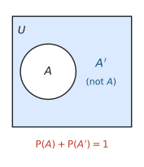
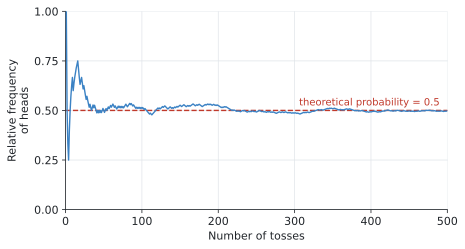

SL 4.5 — Introduction to probability（確率の基礎）
- trial・outcome・sample space・event の意味を説明できる。
- sample space を、表やリストの形で書き出せる。
- 公式集の \(P(A) = \dfrac{n(A)}{n(U)}\) を使って確率を求められる。
- complementary event（余事象）\(A'\) を使って、\(P(A') = 1 - P(A)\) を計算できる。
- relative frequency（相対度数）を求め、theoretical probability との違いを説明できる。
- expected number of occurrences（期待される回数）を求められる。
SL 4.5 の欄には、次の2行が印刷されています。
\[ P(A) = \frac{n(A)}{n(U)} \]
\[ P(A) + P(A') = 1 \]
どちらも短い式ですが、意味が分かっていないと使えません。 \(n(A)\) と \(n(U)\) が何を数えているのかを、この項目でしっかりつかんでください。
確率の計算そのものは割り算だけです。難しいのは、分母と分子を正しく数えることです。
ですから、この項目でやることは実質1つ ── 起こりうることを全部きちんと書き出すことです。
急いで頭の中で数えないでください。 表かリストに書き出すほうが、結局は速くて確実です。
The idea
1. 言葉を4つ覚えます
確率の問題は、言葉の定義が分かっていないと問題文が読めません。 まずここからです。
| English | 日本語 | 意味 | 例（サイコロを1回振る） |
|---|---|---|---|
| trial | 試行 | 1回やってみること | サイコロを1回振る |
| outcome | 結果 | 1回の trial で起こったこと | \(3\) が出た |
| sample space (\(U\)) | 標本空間 | 起こりうる outcome の全部 | \(\{1, 2, 3, 4, 5, 6\}\) |
| event | 事象 | 注目している outcome の集まり | 「偶数が出る」\(= \{2, 4, 6\}\) |
event は、sample space の一部分です。\(\{2,4,6\}\) は \(\{1,2,3,4,5,6\}\) の中に入っています。
IB では sample space を \(U\) と書きます。universal set（全体集合）の \(U\) です。
教科書によっては \(S\)、\(\Omega\)（オメガ）、\(\varepsilon\)（イプシロン）を使うこともありますが、IB の問題文と公式集では \(U\) です。
2. 確率の式
公式集の式は、「注目しているものの個数 ÷ 全部の個数」というだけです。
\[ P(A) = \frac{n(A)}{n(U)} \tag{1}\]
| 記号 | 意味 |
|---|---|
| \(n(A)\) | event \(A\) に入る outcome の個数 |
| \(n(U)\) | sample space 全部の outcome の個数 |
\(n(\ )\) は「個数」を表す記号です。\(n(U) = 6\) なら「起こりうることが全部で6通り」という意味です。
サイコロで「偶数が出る」なら、
\[ P(\text{even}) = \frac{n(\{2,4,6\})}{n(\{1,2,3,4,5,6\})} = \frac{3}{6} = \frac{1}{2} \]
この式が使える条件
シラバスの Content 欄に、さりげなく大事な言葉が入っています。
Concepts of trial, outcome, equally likely outcomes, relative frequency, sample space (\(U\)) and event.
式 1 が使えるのは、すべての outcome が「同じくらい起こりやすい」ときだけです。
サイコロなら、\(1\) から \(6\) はどれも同じくらい出ます。だから「個数を数えて割る」でよいのです。
もし細工のあるサイコロで \(6\) ばかり出るなら、この式は使えません。 そういうときは、実際に振って調べるしかありません（次の節の relative frequency です）。
\[ 0 \leq P(A) \leq 1 \]
- \(P(A) = 0\) … 絶対に起こらない（impossible）
- \(P(A) = 1\) … 必ず起こる（certain）
サイコロで「\(7\) が出る」確率は \(0\)、「\(6\) 以下が出る」確率は \(1\) です。
答えが \(1\) を超えたり負になったりしたら、必ずどこかで間違えています。 出た答えを見て、この範囲に入っているか毎回確かめてください。
3. sample space の書き出し方
シラバスに、こう書かれています。
Sample spaces can be represented in many ways, for example as a table or a list.
表かリストで書き出します。書き出せば、あとは数えるだけです。
リストで書く
コインを2回投げるなら、
\[ U = \{ \text{HH}, \ \text{HT}, \ \text{TH}, \ \text{TT} \} \]
\(n(U) = 4\) です。
HT と TH は別のものとして数えます。1回目が表で2回目が裏、というのと、その逆は違う出来事だからです。ここを1つにまとめてしまうと、答えが変わってしまいます。
表で書く ── サイコロ2個
サイコロを2個振ったときの和は、表にすると一目で分かります。
| \(+\) | 1 | 2 | 3 | 4 | 5 | 6 |
|---|---|---|---|---|---|---|
| 1 | 2 | 3 | 4 | 5 | 6 | 7 |
| 2 | 3 | 4 | 5 | 6 | 7 | 8 |
| 3 | 4 | 5 | 6 | 7 | 8 | 9 |
| 4 | 5 | 6 | 7 | 8 | 9 | 10 |
| 5 | 6 | 7 | 8 | 9 | 10 | 11 |
| 6 | 7 | 8 | 9 | 10 | 11 | 12 |
マス目は \(6 \times 6 = 36\) 個です。これが \(n(U)\) になります。
この表は、試験でも自分でかいてください。 36マスをかくのに1分もかかりません。頭の中で数えるより、ずっと確実です。
4. complementary events（余事象）
\(A\) が起こらないという事象を \(A'\)（A ダッシュ、A prime）と書きます。日本語では 余事象です。

\(A\) と \(A'\) を合わせると、sample space 全体になります。どんな結果も、\(A\) に入るか入らないかのどちらかだからです。
だから、公式集の2行目が成り立ちます。
\[ P(A) + P(A') = 1 \tag{2}\]
実際に使うのは、たいていこの形に変えたものです。
\[ P(A') = 1 - P(A) \]
「〜でない」は引き算のほうが速い
これが余事象の一番の使いどころです。
たとえば 表 3 で「和が \(4\) 以上」の確率を求めるとします。\(4, 5, 6, \ldots, 12\) を全部数えるのは大変です。
そこで逆を数えます。和が \(4\) 未満、つまり \(2\) か \(3\) になるのは \(1 + 2 = 3\) 通りだけです。
\[ P(\text{和が}4\text{未満}) = \frac{3}{36} = \frac{1}{12} \]
\[ P(\text{和が}4\text{以上}) = 1 - \frac{1}{12} = \frac{11}{12} \]
数えるマスが \(33\) 個から \(3\) 個に減りました。
問題文に at least（少なくとも）や not（〜でない）が出てきたら、余事象を思い出してください。 そのほうが速いことがよくあります。
5. relative frequency と theoretical probability
ここまでは「同じくらい起こりやすい」と分かっている場合の話でした。実際にやってみて調べる方法もあります。
\[ \text{relative frequency} = \frac{\text{その結果が起こった回数}}{\text{trial の回数}} \tag{3}\]
これを experimental probability（実験による確率）ともいいます。
| 求め方 | 別名 | |
|---|---|---|
| theoretical probability | 数えて割る（式 1） | 理論上の確率 |
| relative frequency | 実際にやって数える | experimental probability |
回数を増やすと、2つは近づきます
コインを投げて、表が出た割合を記録していくと、次のようになります。

最初は大きく揺れます。 10回くらいでは \(0.7\) になったり \(0.3\) になったりします。
ですが回数が増えるにつれて、\(0.5\) に落ち着いていきます。 これが理論上の確率です。
「相対度数が理論値と違うのはなぜか」と問われたら、理由は2つ考えられます。
- trial の回数が少ないから（もっと増やせば近づく）
- そもそも公平でないから（細工のあるサイコロ、ゆがんだコインなど）
どちらなのかは、ずれの大きさで判断します。少しのずれなら 1、何度やっても大きくずれるなら 2 を疑います。
答案では The number of trials was small や The die may be biased のように書きます。
6. expected number of occurrences
シラバスが、具体例つきで挙げている項目です。
Example: If there are 128 students in a class and the probability of being absent is 0.1, the expected number of absent students is 12.8.
式にすると、こうです。
\[ (\text{期待される回数}) = n \times P(A) \tag{4}\]
\(n\) は trial の回数（人数、個数）です。
\[ 128 \times 0.1 = 12.8 \]
「\(12.8\) 人なんて、いるわけがない」と思うかもしれません。それで正解です。
これは「平均するとこれくらい」という値だからです。SL 4.3 で平均が \(1.45\) 人になったのと同じことです。
答えを \(13\) 人に丸めないでください。 問題文が Give your answer to the nearest whole number と言っていないかぎり、\(12.8\) のまま書きます。
丸めると、次の計算がずれてしまいます。 ここは実際によく間違えるところです。
Why it works
ここでは、なぜ \(P(A) + P(A') = 1\) なのかだけを説明します。
どんな結果が出ても、それは \(A\) に入るか、入らないかのどちらかです。両方に入ることも、どちらにも入らないこともありません。
ですから、\(A\) の個数と \(A'\) の個数を足すと、全体の個数になります。
\[ n(A) + n(A') = n(U) \]
この式の両辺を \(n(U)\) で割ってみます。
\[ \frac{n(A)}{n(U)} + \frac{n(A')}{n(U)} = \frac{n(U)}{n(U)} \]
左の2つは、それぞれ \(P(A)\) と \(P(A')\) です（式 1）。右は \(1\) です。
\[ P(A) + P(A') = 1 \]
図 1 の絵を、式にしただけです。円の中と外を足せば、長方形全体になる ── それだけのことです。
Worked examples
問題文は英語です。意味が理解できなかったら、問題文の下の「日本語訳」を開いてください。解説は日本語です。
例題 1 A bag contains \(5\) red counters, \(3\) blue counters and \(4\) green counters. One counter is taken from the bag at random.
(a) Write down \(n(U)\).
(b) Find the probability that the counter is red.
(c) Find the probability that the counter is not green.
日本語訳
袋の中に赤いカウンターが \(5\) 個、青が \(3\) 個、緑が \(4\) 個入っています。袋から無作為に \(1\) 個取り出します。
(a) \(n(U)\) を書きなさい。
(b) そのカウンターが赤である確率を求めなさい。
(c) そのカウンターが緑でない確率を求めなさい。
（at random は「無作為に」＝どれも同じくらい選ばれやすい、という意味です。）
(a) \(n(U)\) は起こりうること全部の個数です。カウンターは全部で
\[ 5 + 3 + 4 = 12 \ \text{個} \]
\[ n(U) = 12 \]
(b) 赤は \(5\) 個なので \(n(A) = 5\) です。式 1 に入れます。
\[ P(\text{red}) = \frac{n(\text{red})}{n(U)} = \frac{5}{12} \]
約分できないので、このままです。
(c) 「緑でない」は余事象です。2通りの解き方があります。
方法1：直接数える。 緑でないのは赤 \(5\) 個と青 \(3\) 個で \(8\) 個です。
\[ P(\text{not green}) = \frac{8}{12} = \frac{2}{3} \]
方法2：\(1\) から引く。
\[ P(\text{green}) = \frac{4}{12} = \frac{1}{3} \]
\[ P(\text{not green}) = 1 - \frac{1}{3} = \frac{2}{3} \]
どちらでも構いません。 この問題では数えるほうが速いですが、数が多いときは引き算のほうが確実です。
(a) \(n(U) = 5 + 3 + 4 = 12\)
(b) \(P(\text{red}) = \dfrac{5}{12}\)
(c) \(P(\text{not green}) = \dfrac{8}{12} = \dfrac{2}{3}\)
例題 2 Two fair six-sided dice are rolled. The score is the sum of the two numbers.
(a) Write down the number of possible outcomes.
(b) Find the probability that the score is \(7\).
(c) Find the probability that the score is greater than \(9\).
(d) Find the probability that the score is \(1\).
日本語訳
公平な6面のサイコロを2個振ります。得点は2つの数の和です。
(a) 起こりうる結果の総数を書きなさい。
(b) 得点が \(7\) である確率を求めなさい。
(c) 得点が \(9\) より大きい確率を求めなさい。
(d) 得点が \(1\) である確率を求めなさい。
（fair は「公平な」＝どの目も同じくらい出る、という意味です。）
表 3 の表を見ながら数えます。試験でもこの表を自分でかいてください。
(a) \(1\) 個目に \(6\) 通り、\(2\) 個目にも \(6\) 通りなので、
\[ n(U) = 6 \times 6 = 36 \]
(b) 表の中で \(7\) が入っているマスを数えます。斜めに1列並んでいて、\(6\) 個あります。
\[ P(7) = \frac{6}{36} = \frac{1}{6} \]
(c) 「\(9\) より大きい」は \(10\)、\(11\)、\(12\) です。\(9\) は入りません。
表から、\(10\) が \(3\) 個、\(11\) が \(2\) 個、\(12\) が \(1\) 個。
\[ n(A) = 3 + 2 + 1 = 6 \]
\[ P(\text{score} > 9) = \frac{6}{36} = \frac{1}{6} \]
greater than は「より大きい」で、その数自身は含みません。 at least（以上）なら含みます。ここを読み違えると答えが変わります。
(d) 一番小さい和は \(1 + 1 = 2\) です。\(1\) になることはありません。
\[ P(1) = 0 \]
「ありえない」ときの答えは \(0\) です。 空欄にしないでください。
(a) \(n(U) = 36\)
(b) \(P(7) = \dfrac{6}{36} = \dfrac{1}{6}\)
(c) \(P(\text{score} > 9) = \dfrac{3+2+1}{36} = \dfrac{6}{36} = \dfrac{1}{6}\)
(d) \(P(1) = 0\)
例題 3 The probability that a student passes a driving test at the first attempt is \(0.82\).
(a) Find the probability that a student does not pass at the first attempt.
(b) Two dice are rolled. Use the complement to find the probability that the score is at least \(4\).
日本語訳
ある生徒が運転免許の試験に1回目で合格する確率は \(0.82\) です。
(a) 1回目で合格しない確率を求めなさい。
(b) サイコロを2個振ります。余事象を使って、得点が \(4\) 以上である確率を求めなさい。
(a) 「合格しない」は「合格する」の余事象です。式 2 を使います。
\[ P(\text{not pass}) = 1 - 0.82 = 0.18 \]
(b) 問題文が「余事象を使え」と指示しています。なぜそのほうが速いかを思い出してください。
「\(4\) 以上」の逆は「\(4\) 未満」、つまり和が \(2\) か \(3\) です。
表 3 から、\(2\) は \(1\) 個、\(3\) は \(2\) 個。
\[ P(\text{score} < 4) = \frac{1+2}{36} = \frac{3}{36} = \frac{1}{12} \]
\[ P(\text{score} \geq 4) = 1 - \frac{1}{12} = \frac{11}{12} \]
直接数えると \(33\) マスです。 余事象なら \(3\) マス。この差が、余事象を使う理由です。
(a) \(P(\text{not pass}) = 1 - 0.82 = 0.18\)
(b) \(P(\text{score} < 4) = \dfrac{3}{36} = \dfrac{1}{12}\)
\[P(\text{score} \geq 4) = 1 - \frac{1}{12} = \frac{11}{12}\]
例題 4 A die is rolled \(200\) times. The number \(4\) occurs \(40\) times.
(a) Find the relative frequency of rolling a \(4\).
(b) State the theoretical probability of rolling a \(4\) with a fair die.
(c) Comment on whether the die appears to be fair.
日本語訳
サイコロを \(200\) 回振ったところ、\(4\) が \(40\) 回出ました。
(a) \(4\) が出る相対度数を求めなさい。
(b) 公平なサイコロで \(4\) が出る理論上の確率を書きなさい。
(c) このサイコロが公平と言えるかどうか、コメントしなさい。
(a) 式 3 のとおり、出た回数 ÷ 振った回数です。
\[ \text{relative frequency} = \frac{40}{200} = 0.2 \]
(b) 公平なサイコロなら、\(6\) つの目がどれも同じくらい出ます。
\[ P(4) = \frac{1}{6} = 0.167 \quad (3 \text{ s.f.}) \]
(c) 2つをくらべます。
\[ 0.2 \quad \text{と} \quad 0.167 \]
近いですが、ぴったりではありません。 ここで「公平ではない」と決めつけないでください。
相対度数は必ず揺れます。\(200\) 回では、この程度のずれはふつうに起こります。
もっと確かめたければ、回数を増やすことです。 \(2000\) 回、\(20000\) 回と増やして、それでも \(0.2\) 前後に留まるなら、そのときは細工を疑います。
(a) \(\dfrac{40}{200} = 0.2\)
(b) \(\dfrac{1}{6} = 0.167\) (3 s.f.)
(c) The relative frequency \(0.2\) is close to the theoretical probability \(0.167\), so the die may well be fair. The difference could easily be due to the small number of trials. Rolling the die many more times would give a clearer answer.
例題 5 The probability that a student in a school cycles to school is \(0.24\). There are \(850\) students in the school.
(a) Find the expected number of students who cycle to school.
(b) In another school there are \(128\) students and the probability of a student being absent is \(0.1\). Find the expected number of absent students.
日本語訳
ある学校で、生徒が自転車で通学する確率は \(0.24\) です。この学校には \(850\) 人の生徒がいます。
(a) 自転車で通学すると期待される生徒の人数を求めなさい。
(b) 別の学校には \(128\) 人の生徒がいて、生徒が欠席する確率は \(0.1\) です。欠席すると期待される生徒の人数を求めなさい。
(a) 式 4 のとおり、人数 × 確率です。
\[ 850 \times 0.24 = 204 \]
(b) 同じようにやります。
\[ 128 \times 0.1 = 12.8 \]
\(12.8\) 人です。 小数のままで正解です。
\(13\) 人に丸めないでください。 これは「平均するとこれくらい」という値なので、小数になって構いません。
問題文に to the nearest whole number（整数に丸めよ）と書いてあるときだけ、丸めます。
(a) \(850 \times 0.24 = 204\) students
(b) \(128 \times 0.1 = 12.8\) students
Common errors
コイン2枚では、\(U = \{\text{HH}, \text{HT}, \text{TH}, \text{TT}\}\) で \(n(U) = 4\) です。
「表1枚・裏1枚」を1通りとして \(n(U) = 3\) にすると、答えが全部おかしくなります。順番が違えば別の結果です。
greater than と at least を取り違える
greater than 9… \(10, 11, 12\)（\(9\) を含まない）at least 9… \(9, 10, 11, 12\)（\(9\) を含む）
問題文の言葉を、指でなぞって確認してください。 ここだけで答えが変わります。
\(12.8\) 人は \(12.8\) 人のままです。
指示がないかぎり丸めません。「人数だから整数のはず」と考えて丸めるのが、一番多い失点です。
少ない回数なら、ずれるのがふつうです（図 2）。
「回数が少ないからかもしれない」という可能性を、必ず一緒に書いてください。
この式が使えるのは、すべての outcome が同じくらい起こりやすいときだけです。
問題文の fair、at random、equally likely が、その合図です。これらの語がなければ、少し立ち止まってください。
聞かれているのが確率なら、答えは分数か小数です。
「\(6\) 通り」ではなく \(\dfrac{6}{36} = \dfrac{1}{6}\) と書きます。
起こりえないなら、答えは \(0\) です。空欄や「なし」ではありません。
同じように、必ず起こるなら \(1\) です。
Using your GDC (TI-Nspire CX II)
この項目では、電卓の出番はほとんどありません。 数えて割るだけだからです。
ただ、次の2つは知っておくと役に立ちます。
分数のまま計算する
\[ 1 - \frac{1}{12} \]
をそのまま打ち込めば、\(\dfrac{11}{12}\) と分数で返してきます。
小数に直したいときは ctrl + enter で押し直します。\(0.9166\ldots\) になります。
\(\dfrac{11}{12}\) は正確な値ですが、\(0.917\) は丸めた値です。
問題文が小数を指定していなければ、分数のまま書くほうが安全です。
シミュレーションで確かめる ── randInt
図 2 のようなことは、自分の電卓でも確かめられます。
Calculator ページで、
randInt(1, 6, 100)と打つと、\(1\) から \(6\) までの整数が \(100\) 個返ってきます。サイコロを \(100\) 回振ったのと同じです。
これを Lists & Spreadsheet の列に入れて、
menu → Statistics → Stat Calculations → One-Variable Statisticsで \(4\) が何回出たかを数えれば、相対度数が出せます。
同じことを \(100\) 回、\(1000\) 回とやってみると、\(\dfrac{1}{6}\) に近づいていくのが自分の手で見られます。
シラバスには Simulations may be used to enhance this topic（シミュレーションを使うと理解が深まる）と書かれているだけです。
やらなくても点は取れます。 ただ、確率が腑に落ちない人には、実際に手を動かしてみるのが一番の近道です。
Exercises
各問題に、折りたたみが3つ付いています。日本語訳、解答例（答案用紙に書くべきこと。英語です）、解説（なぜそうなるか。日本語です）。
まず自分で解いて、次に解答例と見くらべてください。解説は、合わなかったときだけ開けば十分です。
1 A spinner has \(8\) equal sections numbered \(1\) to \(8\). The spinner is spun once.
(a) Write down the sample space \(U\).
(b) Write down \(n(U)\).
(c) Find the probability of spinning an odd number.
日本語訳
\(1\) から \(8\) までの番号が付いた \(8\) 等分のスピナーがあります。これを \(1\) 回まわします。
(a) 標本空間 \(U\) を書きなさい。
(b) \(n(U)\) を書きなさい。
(c) 奇数が出る確率を求めなさい。
(a) \(U = \{1, 2, 3, 4, 5, 6, 7, 8\}\)
(b) \(n(U) = 8\)
(c) Odd numbers: \(1, 3, 5, 7\)
\[P(\text{odd}) = \frac{4}{8} = \frac{1}{2}\]
(a) Write down the sample space は「起こりうることを全部書け」という指示です。中カッコ \(\{\ \}\) を使ってください。
(b) 個数なので \(8\)。
(c) 奇数は \(1, 3, 5, 7\) の \(4\) つ。\(\dfrac{4}{8}\) を約分して \(\dfrac{1}{2}\) です。
equal sections が「同様に確からしい」の合図です。だから数えて割る式が使えます。
2 A box contains \(7\) red pens, \(5\) white pens and \(8\) black pens. One pen is chosen at random.
(a) Find the probability that the pen is white.
(b) Find the probability that the pen is not red.
日本語訳
箱の中に赤いペンが \(7\) 本、白が \(5\) 本、黒が \(8\) 本入っています。\(1\) 本を無作為に選びます。
(a) そのペンが白である確率を求めなさい。
(b) そのペンが赤でない確率を求めなさい。
\(n(U) = 7 + 5 + 8 = 20\)
(a) \(P(\text{white}) = \dfrac{5}{20} = \dfrac{1}{4}\)
(b) \(P(\text{not red}) = \dfrac{13}{20}\)
まず \(n(U)\) を出します。\(7+5+8 = 20\)。ここを間違えると全部ずれます。
(a) \(\dfrac{5}{20}\) は約分して \(\dfrac{1}{4}\)。
(b) 赤でないのは白 \(5\) 本と黒 \(8\) 本で \(13\) 本。\(\dfrac{13}{20}\) は約分できません。
余事象で \(1 - \dfrac{7}{20} = \dfrac{13}{20}\) としても同じです。どちらでも構いません。
3 A coin is tossed twice.
(a) List all the possible outcomes.
(b) Find the probability of getting exactly one head.
(c) Find the probability of getting at least one head.
日本語訳
コインを \(2\) 回投げます。
(a) 起こりうる結果をすべて書き出しなさい。
(b) 表がちょうど \(1\) 回出る確率を求めなさい。
(c) 表が少なくとも \(1\) 回出る確率を求めなさい。
(a) \(U = \{\text{HH}, \text{HT}, \text{TH}, \text{TT}\}\)
(b) Exactly one head: HT, TH
\[P = \frac{2}{4} = \frac{1}{2}\]
(c) \(P(\text{no heads}) = P(\text{TT}) = \dfrac{1}{4}\)
\[P(\text{at least one head}) = 1 - \frac{1}{4} = \frac{3}{4}\]
(a) \(n(U) = 4\) です。 HT と TH を1つにまとめないでください。
(b) exactly one head（ちょうど1回）は HT と TH の \(2\) 通り。HH は \(2\) 回なので入りません。
(c) at least one（少なくとも1回）が出たら、余事象です。
逆は「\(1\) 回も出ない」＝ TT の \(1\) 通りだけ。
\[1 - \frac{1}{4} = \frac{3}{4}\]
直接数えても HH, HT, TH の \(3\) 通りで同じ答えですが、回数が増えると余事象のほうが圧倒的に速くなります。 いまのうちに慣れておいてください。
4 Two fair six-sided dice are rolled. The score is the positive difference between the two numbers (for example, \(5\) and \(2\) give a score of \(3\)).
(a) Find the probability that the score is \(0\).
(b) Find the probability that the score is at least \(4\).
日本語訳
公平な6面のサイコロを \(2\) 個振ります。得点は \(2\) つの数の差（正の値）です（たとえば \(5\) と \(2\) なら得点は \(3\)）。
(a) 得点が \(0\) である確率を求めなさい。
(b) 得点が \(4\) 以上である確率を求めなさい。
\(n(U) = 36\)
(a) Score \(0\): \((1,1), (2,2), (3,3), (4,4), (5,5), (6,6)\) — \(6\) outcomes
\[P(0) = \frac{6}{36} = \frac{1}{6}\]
(b) Score \(4\): \((1,5),(5,1),(2,6),(6,2)\) — \(4\) outcomes
Score \(5\): \((1,6),(6,1)\) — \(2\) outcomes
\[P(\text{at least } 4) = \frac{4+2}{36} = \frac{6}{36} = \frac{1}{6}\]
和ではなく差の表を、自分でかいてください。表 3 と同じ \(6 \times 6\) の表で、中身を差にするだけです。
(a) 差が \(0\) になるのは同じ目が出たときです。表の斜め1列、\(6\) 個です。
(b) at least 4 は \(4\) と \(5\) です。差の最大は \(6-1 = 5\) なので、\(6\) はありえません。
\(4\) になるのは \((1,5)\) と \((5,1)\)、\((2,6)\) と \((6,2)\) の \(4\) 通り。順番が違うものを両方数えるのを忘れないでください。
\(5\) になるのは \((1,6)\) と \((6,1)\) の \(2\) 通り。合わせて \(6\) 通りです。
5 The probability that it rains on a given day in a city is \(0.35\).
(a) Find the probability that it does not rain on that day.
(b) Write down \(P(A) + P(A')\) for any event \(A\).
日本語訳
ある都市で、ある日に雨が降る確率は \(0.35\) です。
(a) その日に雨が降らない確率を求めなさい。
(b) 任意の事象 \(A\) について \(P(A) + P(A')\) を書きなさい。
(a) \(P(\text{no rain}) = 1 - 0.35 = 0.65\)
(b) \(P(A) + P(A') = 1\)
(a) 余事象なので \(1\) から引くだけです。
(b) これは公式集に載っている式そのものです。どんな事象でも必ず \(1\) になります。
理由は Why it works のとおりで、\(A\) と \(A'\) を合わせると全体になるからです。
6 A spinner has \(4\) equal sections coloured red, blue, green and yellow. The spinner is spun \(300\) times and lands on red \(57\) times.
(a) Find the relative frequency of landing on red.
(b) State the theoretical probability of landing on red.
(c) Give one reason why these two values are different.
日本語訳
\(4\) 等分され、赤・青・緑・黄に色分けされたスピナーがあります。\(300\) 回まわして、赤に \(57\) 回止まりました。
(a) 赤に止まる相対度数を求めなさい。
(b) 赤に止まる理論上の確率を書きなさい。
(c) この \(2\) つの値が異なる理由を \(1\) つ挙げなさい。
(a) \(\dfrac{57}{300} = 0.19\)
(b) \(\dfrac{1}{4} = 0.25\)
(c) The relative frequency is based on a limited number of trials, so it will not be exactly equal to the theoretical probability. (Alternatively, the spinner may not be perfectly fair.)
(a) \(\dfrac{57}{300} = 0.19\)。
(b) \(4\) 等分なので \(\dfrac{1}{4} = 0.25\)。
(c) 理由は2つあり、どちらか1つ書けば正解です。
- 回数が限られているから（もっとまわせば近づく）
- スピナーが完全に公平でないから
\(0.19\) と \(0.25\) の差は \(0.06\)。\(300\) 回なら、このくらいのずれは起こりえます。ですから「公平でない」と決めつける書き方は避けてください。 may not be のように書きます。
7 A factory produces \(1200\) light bulbs in a day. The probability that a bulb is faulty is \(0.035\).
Find the expected number of faulty bulbs produced in a day.
日本語訳
ある工場では1日に \(1200\) 個の電球を作ります。電球が不良品である確率は \(0.035\) です。
1日に作られる不良品の期待される個数を求めなさい。
\[1200 \times 0.035 = 42 \ \text{bulbs}\]
個数 × 確率、それだけです（式 4）。
\[1200 \times 0.035 = 42\]
ちょうど整数になりました。 ですがこれは偶然で、整数になるとはかぎりません（次の問題を見てください）。
単位（bulbs）も書いてください。 数字だけだと何の \(42\) か伝わりません。
8 A class has \(90\) students. The probability that a student is left-handed is \(0.18\).
(a) Find the expected number of left-handed students.
(b) Explain why your answer to part (a) is not a whole number.
日本語訳
ある学年に \(90\) 人の生徒がいます。生徒が左利きである確率は \(0.18\) です。
(a) 左利きの生徒の期待される人数を求めなさい。
(b) (a) の答えが整数にならない理由を説明しなさい。
（本書オリジナルの問題です。）
(a) \(90 \times 0.18 = 16.2\) students
(b) The expected number is an average value, not the number of students in any one particular class. Over many classes of \(90\) students, the average number of left-handed students would be \(16.2\). It does not need to be a whole number.
(a) \(90 \times 0.18 = 16.2\)。\(16\) に丸めないでください。
(b) ここが本題です。
期待値は「平均するとこれくらい」という値です。実際のあるクラスでは \(15\) 人だったり \(18\) 人だったりしますが、たくさんのクラスで平均を取ると \(16.2\) に近づきます。
SL 4.3 で、兄弟の人数の平均が \(1.45\) 人になったのと同じことです。\(1.45\) 人の兄弟がいる人はいませんが、平均としては正しい値でした。
「小数でよい」だけでなく、「平均だから」という理由まで書けると完成です。
9 A bag contains only red and blue marbles. One marble is taken at random. State the value of each of the following.
(a) The probability of taking a green marble.
(b) The probability of taking a marble that is either red or blue.
日本語訳
袋の中には赤と青のビー玉だけが入っています。\(1\) 個を無作為に取り出します。次のそれぞれの値を答えなさい。
(a) 緑のビー玉を取り出す確率。
(b) 赤または青のビー玉を取り出す確率。
(a) \(0\)
(b) \(1\)
(a) 緑は入っていないので、絶対に起こりません。確率は \(0\) です。
空欄にしたり「なし」と書いたりしないでください。 \(0\) という数が答えです。
(b) 赤か青しか入っていないので、取り出したビー玉は必ずどちらかです。必ず起こるので確率は \(1\) です。
この2つが確率のとりうる範囲の両端です。
\[0 \leq P(A) \leq 1\]
答えがこの範囲の外に出たら、必ず計算ミスです。
10 In a town, the probability that a randomly chosen household owns a dog is \(0.15\). There are \(4000\) households in the town.
(a) Find the probability that a randomly chosen household does not own a dog.
(b) Find the expected number of households that own a dog.
(c) Find the expected number of households that do not own a dog.
日本語訳
ある町で、無作為に選んだ世帯が犬を飼っている確率は \(0.15\) です。町には \(4000\) 世帯あります。
(a) 無作為に選んだ世帯が犬を飼っていない確率を求めなさい。
(b) 犬を飼っていると期待される世帯数を求めなさい。
(c) 犬を飼っていないと期待される世帯数を求めなさい。
(a) \(P(\text{no dog}) = 1 - 0.15 = 0.85\)
(b) \(4000 \times 0.15 = 600\) households
(c) \(4000 \times 0.85 = 3400\) households
この項目で学んだことが全部つながる問題です。
(a) 余事象。\(1 - 0.15 = 0.85\)。
(b) 世帯数 × 確率。\(4000 \times 0.15 = 600\)。
(c) (a) で出した \(0.85\) を使います。\(4000 \times 0.85 = 3400\)。
検算：\(600 + 3400 = 4000\) ✓ 全世帯の数になります。
これは偶然ではありません。\(P(A) + P(A') = 1\) の両辺に \(4000\) を掛けたものだからです。この足し算で確かめる習慣をつけてください。